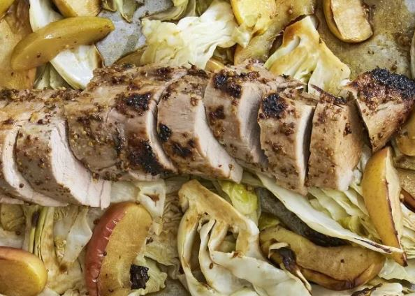

Crispy Rosemary Chicken and Fries

Description
This is a one pan meal that's in the oven in 15 minutes. Rosemary, garlic, and
oregano create a mouth watering aroma. If using dried herbs in place of fresh,
use 1/3 the amount. Potatoes are crispy like french fries, just serve with ketchup.
Kids just love this!
Ingredients
- 8 chicken thighs
- 6 small red potatoes, quartered
- ½ cup extra-virgin olive oil, or as needed
- 1 tablespoon chopped fresh rosemary
- 1 ½ teaspoons chopped fresh oregano
- 1 ½ teaspoons garlic powder
- salt and pepper to taste
Steps
- Preheat the oven to 375 degrees F (190 degrees C).
- Place chicken and potatoes into a large bowl. Pour olive oil over them, and stir
to coat. Scatter the chicken and potato pieces in a large baking dish, or cookie
sheet with sides. Sprinkle with rosemary, oregano, garlic powder, salt and pepper.
- Bake for 1 hour in the preheated oven, uncovered. Baste during the last 15
minutes for extra crispness.
Next recipe